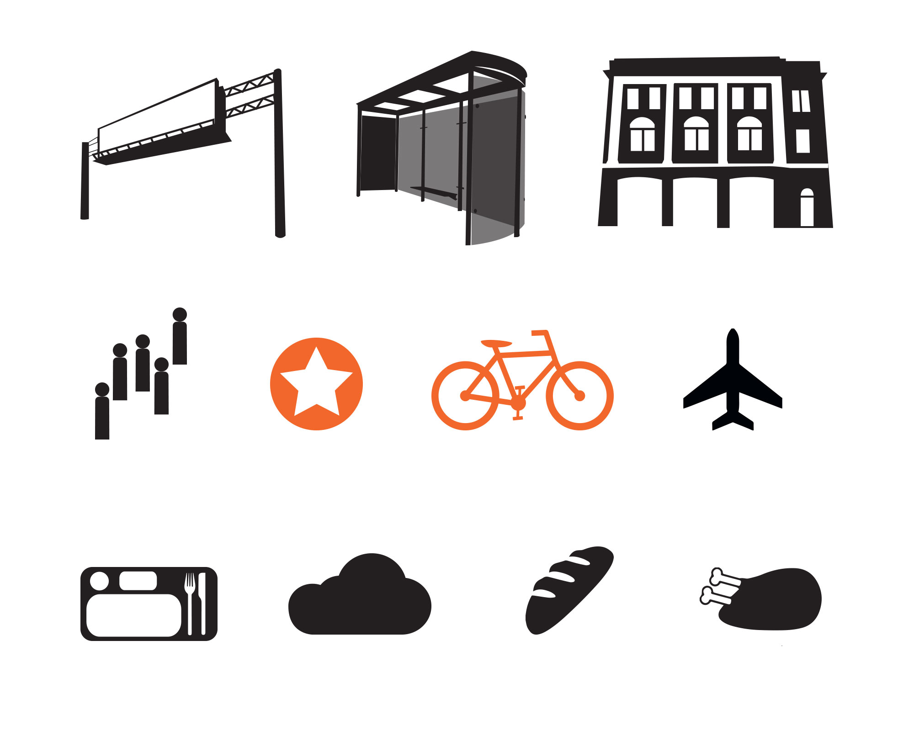
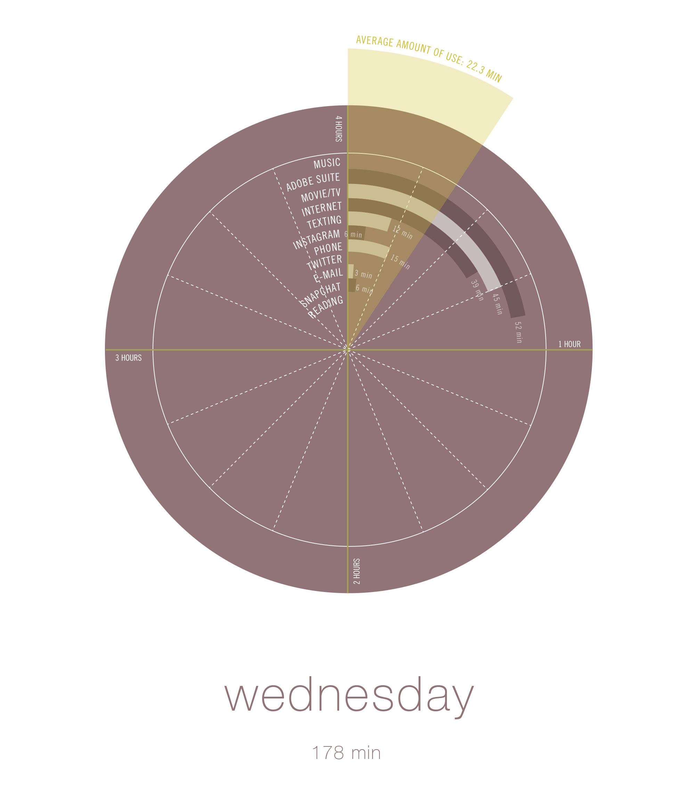
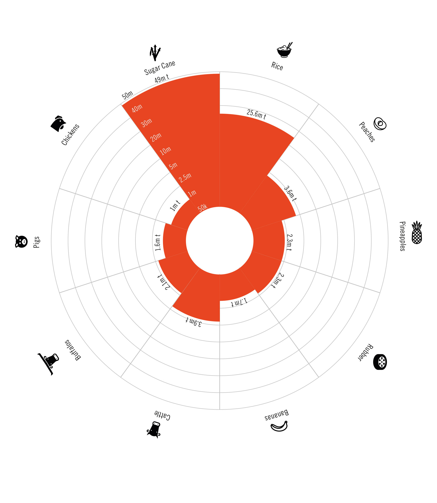
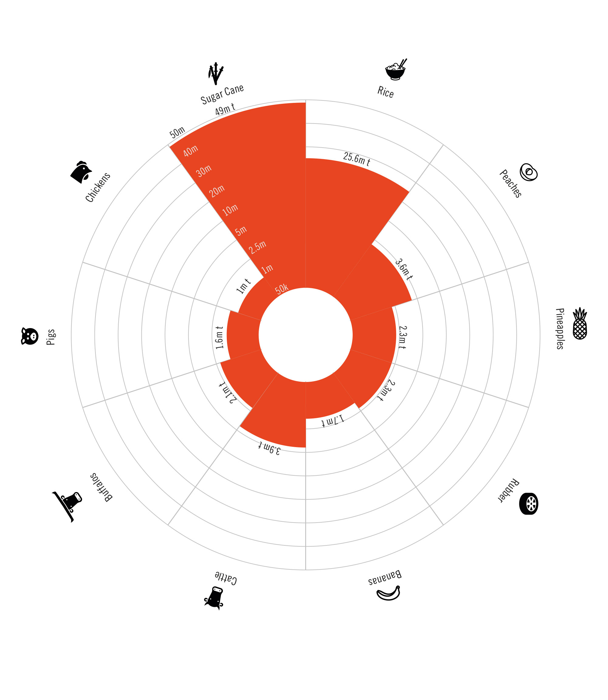

This is work completed for Information Design class with Douglas Scott during my Fall 2014 semester at Northeastern University in Boston, MA.
The first work we completed was called the 3-maps project. The assignment was to figure out a way to display three very different distances on one map. One was from our home on or around campus to class, one was from our parents' homes to Northeastern University, and one was from Boston to somewhere overseas. My solution was to show the context of the world in the background and have three separate callouts at different scales. We also had to include 10 different types of data about things that happen or are present during each trip. These data points are represented by various black icons throughout each route.

I wanted to make sure I had a consisten visual language with the icons. I left all of them black except for the modes of transportation and the markeres for routes, destinations and starting locations. This made them pop more so that they would be easier to find and follow.
 The second project was to collect data about our own individual media usage. During one week, we recorded the amount of time spent on all different types of media from reading, using the internet, using various Adobe programs, texting, Snapchat, Instagram, etc. After doing this for one week, we were asked to visually represent each day. I chose to also include an overlay layer of each average amount of time spent on media because I thought this information was interesting, and gives a quick overview at a glance.
The second project was to collect data about our own individual media usage. During one week, we recorded the amount of time spent on all different types of media from reading, using the internet, using various Adobe programs, texting, Snapchat, Instagram, etc. After doing this for one week, we were asked to visually represent each day. I chose to also include an overlay layer of each average amount of time spent on media because I thought this information was interesting, and gives a quick overview at a glance.

 For the final project we each received a packet of data about a country. We were asked to visually represent different catagories of data so that the information could be easily discerned and sorted. The biggest challenges were to fit everything in a systematic even with varying graphs and types of data. The minute details as well as the overall feeling of the finsihed project were also important, of course.

I wanted to make sure to use consistent iconography that was simple and to the point. I left most of the data monochrome so that the orange I used for all things "Thailand" would pop more and be more visually representative of the pertinent data.
For the final project we each received a packet of data about a country. We were asked to visually represent different catagories of data so that the information could be easily discerned and sorted. The biggest challenges were to fit everything in a systematic even with varying graphs and types of data. The minute details as well as the overall feeling of the finsihed project were also important, of course.

I wanted to make sure to use consistent iconography that was simple and to the point. I left most of the data monochrome so that the orange I used for all things "Thailand" would pop more and be more visually representative of the pertinent data.